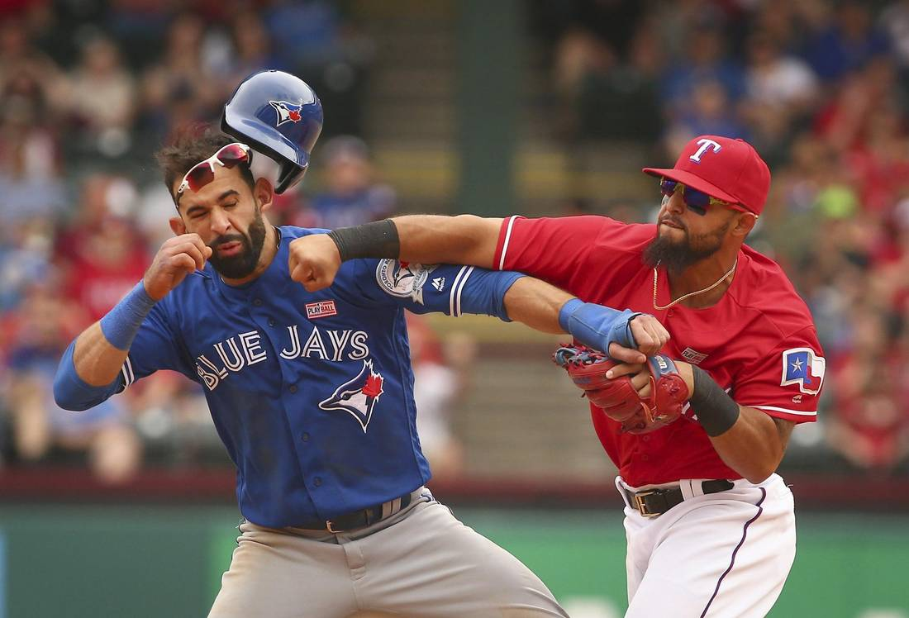
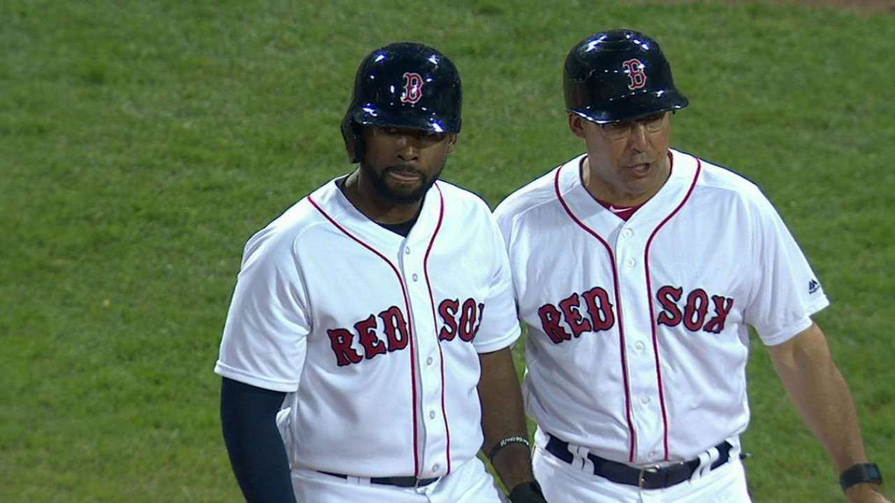
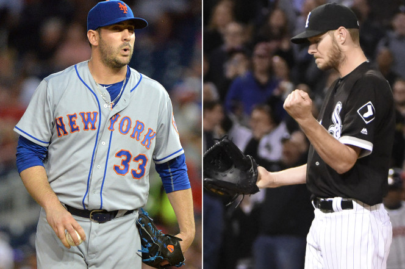
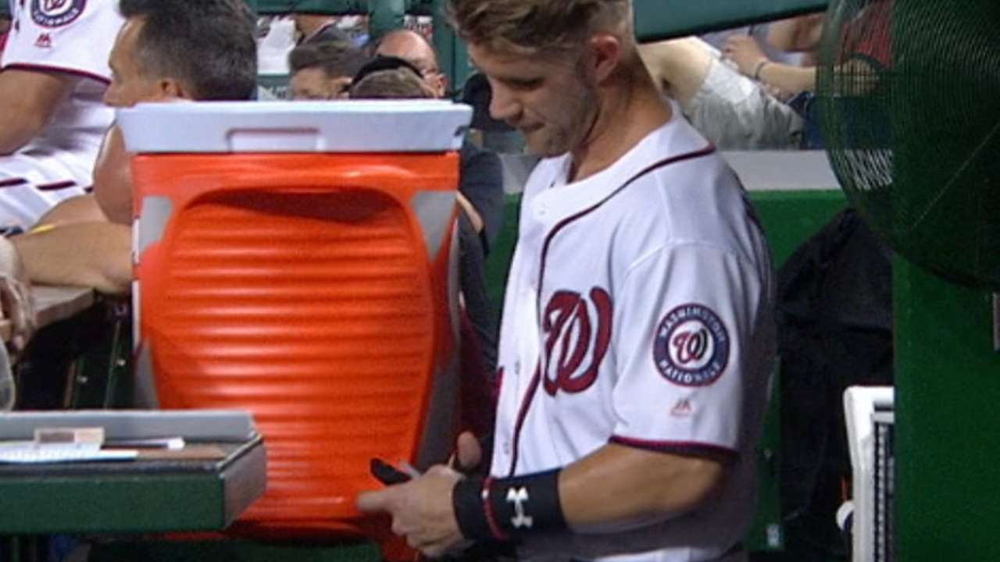

Blue Jays-Rangers brawl will likely trigger multiple suspensions
Sometime this week, Major League Baseball is expected to hand out several fines and a few suspensions for Sunday's brawl between the Rangers and Blue Jays. Most of them are likely to be relatively minor, but Rangers second baseman Rougned Odor, who slugged Blue Jays outfielder Jose Bautista with a right cross, is in line for the most significant suspension handed to a position player in at least a few years.
Bradley extends hitting streak to 29 games
In the rich history of the Red Sox, there are only three players who have put together a longer hitting streak than Jackie Bradley Jr., who extended his impressive run to 29 games in Wednesday night's 10-3 win over the Rockies. Not only is Bradley getting hits, but he's doing it with an impressive all-fields approach that now has him one game from becoming the first Major Leaguer to hit in 30 straight games since the Dodgers' Andre Ether in 2011.
Dodgers 19-year-old pitching prospect Julio Urias slated for MLB debut

Los Angeles Dodgers 19-year-old pitching prospect Julio Urias will make his major-league debut against the New York Mets on Friday. Urias, a lefty who was signed by Los Angeles at age 16, is slated to oppose the Mets’ Jacob deGrom at Citi Field, the Dodgers announced in Thursday.
Matt Harvey gets to face one of the hottest starters in baseball
Just in case Matt Harvey doesn’t have enough to consider, his next scheduled start will come against arguably the American League’s best pitcher. Because of a postponement Thursday, the White Sox rotation now aligns with stud lefty Chris Sale set to face Harvey on Monday afternoon.
Bryce cuts up gloves after third-deck HR
In 1999, Kellogg's released a special edition of Cocoa Frosted Flakes with NBA Rookie of the Year Vince Carter on the cover. Raptors fan Andy Pyne bought a box and kept it for nearly two decades. Pyne made a bet three years ago that he'd eat the cereal if the Raptors ever made it to the ECF. Kyle Lowry delivered a stunning performance in Game 7 to lead Toronto to a series against the Cavaliers, and Pyne kept his word.
Cubs add veteran former All-Star Joe Nathan, coming off Tommy John
It looks as if Bryce Harper might stick to the "no batting gloves" method of hitting. In the sixth inning of Thusday's game between the Nats and Cardinals, Harper tied the score at 1-1 with an absolute moonshot home run that landed in the third deck at Nationals Park.